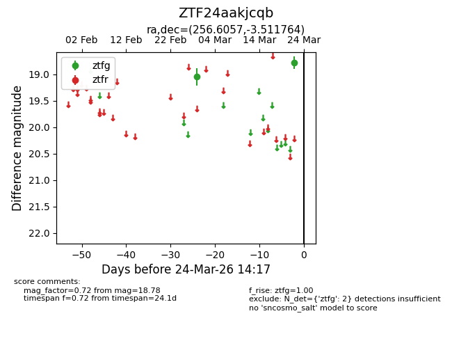
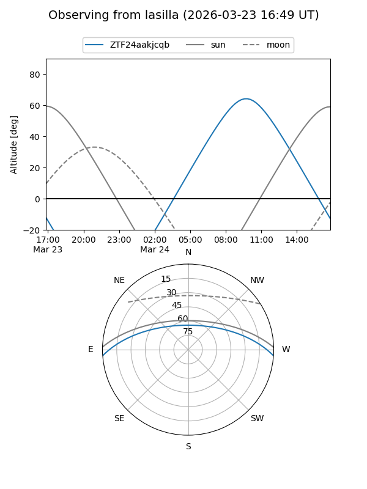
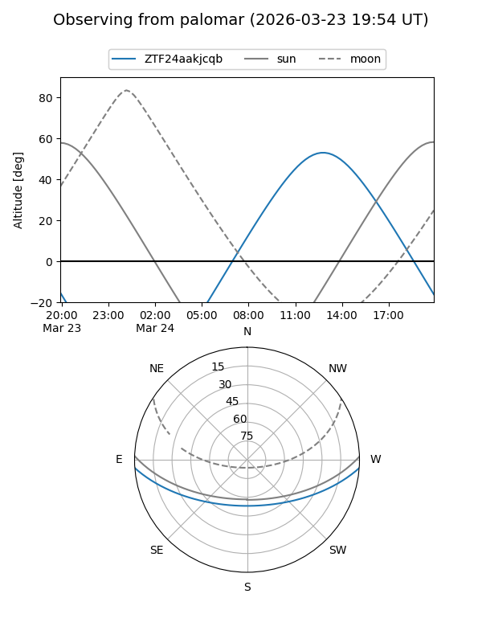

ZTF24aakjcqb
Target ZTF24aakjcqb at 2026-03-24 14:20
Aliases and brokers:
FINK: link
Lasair: link
ALeRCE: link
alt names
ZTF24aakjcqb (ztf,fink_ztf)
Coordinates:
equatorial (ra, dec) = 256.6057,-3.51176
equatorial (HMS+DMS) = 17:06:25.37,-03:30:42.35
galactic (l, b) = (16.9818,+21.40847)
Flags:
Photometry:
last ztfg=18.78
2 ztfg detections
Lightcurve

Visibility


Additional plots